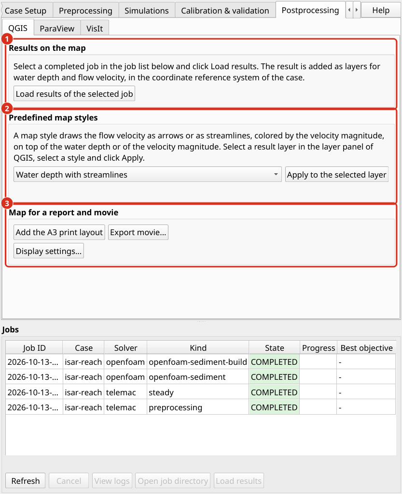

Post-traitement
Le post-traitement transforme les résultats de simulation en cartes, chiffres et tableaux. Les résultats moyens de profondeur sont mieux présentés sous forme de cartes dans le SGQG. Les résultats tridimensionnels nécessitent ParaView ou VisIt (Après traitement).
Génération de cartes QGIS
Résultats de la charge. Dans la liste tâche ci-dessous les onglets, sélectionnez une tâche complétée et cliquez sur Load results. Le résultat Coups sont ajoutés au projet QGIS dans un groupe nommé d’après la tâche. aXqua ne copie aucun fichier. Les couches renvoient aux fichiers de résultats à leur emplacement à axqua-case/. La carte montre le dernier pas de temps du résultat, qui pour une simulation en régime permanent est le régime permanent. Le panneau Temporal Controller de QGIS sélectionne un autre pas de temps, par exemple une simulation avec un débit variable.


L’onglet Postprocessing, sous-tab QGIS. (1) Chargement des résultats de la tâche sélectionnée. (2) Les styles de carte prédéfinis. (3) La mise en page, l’exportation du film et les paramètres d’affichage.
Les résultats TELEMAC sont chargés sous forme de couche maillage avec deux styles prédéfinis :
Hauteur d’eau est tiré du blanc sur le bleu clair au bleu foncé. L’eau qui est plus faible que la hauteur d’eau minimale est transparente, de sorte que la carte indique la zone dans laquelle l’eau coule réellement (Profil d’extension).
Vitesse d’écoulement est dessiné comme un remplissage de couleur de l’amplitude de vitesse, du jaune (doux) au violet (rapide), avec des flèches foncées dans le sens de l’écoulement. L’échelle de couleur se termine à la limite supérieure du profil, et aXqua signale lorsqu’un résultat le dépasse. Les flèches se trouvent sur une grille régulière de la carte, de sorte que leur nombre ne dépend pas du maillage, et aucune flèche n’est dessinée là où se trouve l’eau.
Styles de carte prédéfinis. L’onglet Postprocessing, sous-tab QGIS, offre quatre styles de cartes qui combinent la direction du flux avec une seconde quantité dans une couche. Sélectionnez un résultat couche dans le panneau couche de QGIS, sélectionnez un style et cliquez Apply to the selected layer:
Style de carte |
Contenu |
|---|---|
Hauteur d’eau avec rationalisations |
La hauteur d’eau en bleu. En plus, rationalise qui suivent la direction de l’écoulement et sont colorés par l’amplitude de vitesse, de l’orange clair (doux) au rouge foncé (rapide). |
Hauteur d’eau avec flèches de vitesse |
La hauteur d’eau en bleu avec des flèches dans le sens de l’écoulement, coloré par l’amplitude de vitesse de la même manière. |
Ampleur de vitesse avec rationalisation |
L’amplitude de vitesse du jaune au violet avec des rationalisations foncées. |
Grandeur de vitesse avec flèches |
L’amplitude de vitesse du jaune au violet avec des flèches foncées. C’est le style dans lequel la vitesse couche est chargée. |
Cartes d’un cas. Les couches Load results ajoute, et si l’un de ces styles de carte est appliqué à la fois, est défini pour chaque cas dans ses paramètres (Open case settings… sur l’onglet Case Setup, page Post-processing) : postproc.telemac_maps sélectionne les cartes d’un résultat TELEMAC (depth, velocity, free-surface; hauteur d’eau et vitesse par défaut), et postproc.map_style nomme un style de carte qui est appliqué à la hauteur d’eau couche de chaque résultat TELEMAC chargé (depth-streamlines, depth-arrows, velocity-streamlines, velocity-arrows; aucun par défaut).
Une rationalisation est une ligne qui est tangente à la vitesse à chacun de ses points. Les lignes de flux montrent donc les voies d’écoulement, les zones de recirculation et la division du débit entre plusieurs chenaux plus clairement que les flèches. Ni flèches ni rationalisations ne sont tirées lorsque la vitesse est inférieure à 0,05 m/s. Toutes les autres propriétés des couches sont modifiées dans les propriétés QGIS couche comme d’habitude (Layer Properties > Symbology).

Un résultat stable dans le style de la carte Water depth with streamlines: la hauteur d’eau en bleu et les rationalisations colorées par l’amplitude de vitesse.
Imprimer la mise en page. aXqua > Add the default A3 print layout crée une mise en page pour l’étendue de la carte actuelle. Il contient la carte, une flèche nord, une flèche dans la direction du flux, une barre d’échelle et une légende. Remplissez la légende et exportez la mise en page en format PDF ou image depuis le gestionnaire de mise en page QGIS.
Movies. Pour une simulation avec un débit variable, aXqua > Export movie rend une image par sortie pas de temps d’une variable de résultat et combine les images dans un fichier vidéo. Le film utilise l’étendue de la carte actuelle et les styles couche. L’encodage nécessite le programme ffmpeg. Si elle n’est pas installée, les images sont conservées et aXqua affiche la commande avec laquelle elles peuvent être encodées plus tard.
Exportation Les couches de résultat sont des couches QGIS ordinaires. Ils sont exportés vers d’autres formats avec les fonctions d’exportation de QGIS, par exemple vers un raster de hauteurs d’eau.
Tableaux. Les évaluations d’une course, comme les débits aux frontières et la zone mouillée, sont stockées en fichiers CSV à côté des résultats (TELEMAC à sec 2D/3D). Avec geodata.control_sections, aXqua calcule en outre le débit à travers chaque profil en travers de cette couche à partir du résultat. Les profils en travers peuvent être déplacés dans QGIS et évalués à nouveau sans répéter la simulation.
ParaView
ParaView convient pour l’inspection interactive des résultats en trois dimensions. Il ouvre un modèle OpenFOAM directement et un résultat TELEMAC après une exportation.
Exportation des résultats de TELEMAC. ParaView et VisIl ne lit pas le format de résultat de TELEMAC (SELAFIN). aXqua convertit donc un résultat une fois dans le format VTK, que les deux programmes lisent. Sur l’onglet Postprocessing > ParaView, la table liste les résultats TELEMAC du cas sélectionnée avec leur numéro de pas de temps. Sélectionnez un ou plusieurs résultats, choisissez entre tous les pas de temps et le dernier pas de temps seulement, et cliquez sur Export. Sans sélection, tous les résultats sont exportés. La conversion d’un pas de temps prend environ une seconde pour un maillage de 230 000 nœuds. La même exportation sert ParaView et VisIt, et est répétée après qu’une simulation a été exécutée à nouveau : la colonne Exported indique si les fichiers exportés sont plus anciens que le résultat.
Les fichiers exportés sont écrits au dossier axqua-case/postprocessing/vtk/. Chaque résultat a un fichier <result>.pvd pour ParaView, un fichier <result>.visit pour VisIt et un dossier avec un fichier par pas de temps. Dans un terminal, l’exportation est :
axqua export <case-file> # all results of the case
axqua export <case-file> --result r2d.slf --frames last
axqua export <case-file> --list # what the case has, and what is exported

L’onglet Postprocessing, sous-tab ParaView. (1) Les sous-tabs des trois programmes. (2) Les résultats TELEMAC du cas actif. (3) Export convertit les résultats sélectionnés. (4) Open in ParaView commence le programme avec le résultat exporté. Le sous-tab VisIt a la même structure.
Ce que contiennent les fichiers exportés :
Un résultat 2D est une surface de triangles dans le plan horizontal, à l’élévation zéro. Les champs portent leurs noms TELEMAC, par exemple
WATER DEPTH,FREE SURFACE,BOTTOMetSCALAR VELOCITY. La vitesse est également disponible en tant que vecteurVELOCITY, dont les flèches et les rationalisations nécessitent.Un résultat en 3D est un volume de prismes entre le lit et la surface libre, avec les élévations de nœud de chaque pas de temps. Le vecteur
VELOCITYa trois composantes.Le temps de chaque pas de temps est le temps simulé en secondes.
Les coordonnées de nœud sont tirées du fichier géométrique du modèle et non du fichier résultat. TELEMAC stocke un résultat de précision unique, y compris ses coordonnées, et une coordonnée de plusieurs millions de mètres a une résolution de 0,5 m dans cette précision. Le calcul n’est pas affecté, car TELEMAC calcule avec la géométrie exacte. Le maillage qui est stocké dans un fichier résultat, cependant, est déformé : dans un modèle avec des cellules chenal de 0,5 m, 14 % des cellules du maillage stocké n’avaient plus de surface. aXqua place les champs sur les nœuds exacts.
Ouvrir un résultat TELEMAC. Cliquez sur Open in ParaView, ou commencez ParaView et ouvrez le fichier <result>.pvd. Cliquez sur Apply. Les étapes suivantes sont typiques :
Sélectionnez le champ à afficher dans la barre d’outils, par exemple
WATER DEPTH. Le pas de temps est sélectionné avec les commandes d’animation.Pour afficher l’eau seulement, appliquer le filtre Threshold à
WATER DEPTHavec une limite inférieure de 0,01 m. Il s’agit de la hauteur d’eau minimale utilisée par aXqua dans ses propres évaluations (TELEMAC à sec 2D/3D).Pour afficher le relief d’un résultat 2D, appliquez le filtre Warp By Scalar avec
BOTTOMpour le terrain ouFREE SURFACEpour la surface libre. Le maillage est plat par défaut pour une raison : une zone ou un volume que le filtre Integrate Variables calcule sur le plan maillage est la zone ou le volume du modèle, alors que la même intégrale sur un maillage sur le lit en pente est plus grande.Pour simplifier, appliquer le filtre Stream Tracer avec le vecteur
VELOCITYet une ligne à travers le chenal comme graine.
Ouvrir un modèle OpenFOAM. Un modèle OpenFOAM d’aXqua n’a pas besoin d’exportation. La boîte OpenFOAM cases of the selected case sur les sous-tabs ParaView et VisIt liste les modèles OpenFOAM du cas actif (le modèle surface libre et le modèle sédiments fins), et Open the OpenFOAM case in ParaView (ou in VisIt) commence le programme avec elle. Ce qu’offre un modèle OpenFOAM est défini dans les paramètres cas, page Post-processing, avec postproc.openfoam_outputs: paraview (le fichier case.foam), visit (le fichier system/controlDict, à travers lequel VisIt ouvre un cas OpenFOAM), et vtk, une conversion avec foamToVTK après chaque course, qui peut doubler la taille d’un cas. ParaView et VisIt sont offerts par défaut. Dans ParaView, le modèle peut également être ouvert avec File > Open et le fichier case.foam dans le dossier axqua-case/openfoam/. Les régions de maillage et les champs de résultat peuvent ensuite être sélectionnés dans le panneau de propriétés. Pour afficher l’eau uniquement, appliquez le filtre Threshold ou Clip au champ alpha.water, qui est 1 dans l’eau et 0 dans l’air.
VisIt
VisIt sert deux buts : l’inspection interactive des résultats, comme avec ParaView, et les figures prédéfinies qu’aXqua rend sans interaction.
Ouvrir un résultat TELEMAC. Exporter le résultat comme décrit pour ParaView (exportation des résultats de TELEMAC). L’onglet Postprocessing > VisIt a la même table et la même Export bouton, et une exportation sert les deux programmes. Cliquez sur Open in VisIt, ou commencez VisIt et ouvrez le fichier <result>.visit. Ajoutez un complot avec Add > Pseudocolor et sélectionnez un champ, par exemple WATER DEPTH, puis cliquez sur Draw. Le curseur de temps passe par le pas de temps. L’opérateur Elevate affiche le relief d’un résultat 2D, et l’opérateur Threshold limite le tracé à l’eau.
Ouvrir un modèle OpenFOAM. VisIt ouvre un modèle OpenFOAM à travers le fichier system/controlDict dans le dossier axqua-case/openfoam/. Contrairement à ParaView, il n’accepte pas le fichier case.foam.
Chiffres prédéfinis. aXqua rend des chiffres prédéfinis de résultats OpenFOAM en trois dimensions avec VisIt. Aucune interaction avec VisIl est nécessaire : aXqua écrit un script pour chaque figure et permet à VisIt de l’exécuter sans ouvrir de fenêtre.
Graphique |
Contenu |
|---|---|
|
La surface libre, colorée par la vitesse d’écoulement. Pour un modèle en mode |
|
Le vitesse d’écoulement dans une section horizontale à la profondeur relative à laquelle les mesures de vitesse dans les rivières sont généralement prises (0,6 de la hauteur d’eau). |
|
Profils de vitesse verticaux aux points de mesure, avec les valeurs mesurées et leurs barres d’erreur. |
Dans un terminal, les commandes sont :
axqua postproc <case-file> --list # available figures, and the reason if one is not available
axqua postproc <case-file> # render all figures
axqua postproc <case-file> --script-only # write the VisIt scripts without rendering
Les chiffres sont écrits à axqua-case/postprocessing/figures/. Les scripts sont conservés à axqua-case/postprocessing/visit/, afin que chaque figure puisse être reproduite et adaptée. La liste des figures (postproc.scenes) et la taille de l’image sont définies dans le bloc postproc du fichier de cas, qui est la page Post-processing des paramètres cas.
Note
Le démarrage des chiffres prédéfinis de l’extension n’est pas encore disponible dans cette version. Utilisez les commandes ci-dessus.